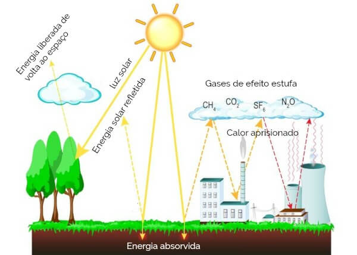

O aquecimento global é um fenômeno climático preocupante que se refere ao aumento das temperaturas médias da Terra ao longo do tempo. Para entender o que é aquecimento global, é preciso saber que ele ocorre devido ao acúmulo de gases de efeito estufa na atmosfera, como dióxido de carbono (CO2), metano (CH4) e óxido nitroso (N2O), que retêm o calor do sol e impedem que ele escape de volta para o espaço. Essa retenção excessiva de calor causa um desequilíbrio no sistema climático global, resultando em temperaturas médias mais altas.
O aquecimento global resulta de uma série de fatores interligados, principalmente relacionados às atividades humanas. A causa primordial é o aumento da concentração de gases de efeito estufa na atmosfera, que aprisionam o calor solar e elevam a temperatura média da Terra. Esses gases incluem o dióxido de carbono (CO2) proveniente da queima de combustíveis fósseis, o metano (CH4) gerado pela agricultura e pecuária, o óxido nitroso (N2O), e outros subprodutos industriais. O desmatamento também desempenha um papel significativo, liberando CO2 ao remover florestas. Além disso, a utilização de clorofluorcarbonetos (CFCs) em produtos industriais contribui para o problema. À medida que a urbanização cresce, o consumo de energia e as emissões de gases de efeito estufa aumentam, intensificando ainda mais o aquecimento global. Portanto, é crucial compreender essas causas complexas para mitigar os impactos do aquecimento global e reduzir os danos às mudanças climáticas.
O aquecimento global desencadeia uma série de impactos que abrangem tanto o meio ambiente quanto a sociedade. Entre as consequências do aquecimento global, está o derretimento das calotas polares e geleiras resulta no aumento do nível do mar, ameaçando comunidades costeiras. Eventos climáticos extremos, como furacões, secas e inundações, se intensificam, causando danos significativos. A biodiversidade é afetada pela perturbação dos habitats naturais. A escassez de recursos hídricos compromete a agricultura e o abastecimento de água. Impactos econômicos se manifestam por meio de danos causados por eventos climáticos extremos e custos de adaptação. A saúde pública enfrenta desafios, com o aumento da propagação de doenças transmitidas por vetores. Migrações forçadas e conflitos por recursos naturais podem surgir. De fato, o aquecimento global representa uma ameaça abrangente que requer ações coordenadas globalmente para reduzir emissões de gases de efeito estufa e se adaptar às mudanças climáticas.
A redução do aquecimento global é uma necessidade urgente, exigindo uma abordagem multifacetada. Primeiramente, a transição para fontes de energia limpa, como a energia solar e eólica, é crucial. Essas alternativas sustentáveis diminuirão a dependência dos combustíveis fósseis, principal causa das emissões de gases de efeito estufa. Além disso, melhorar a eficiência energética em edifícios, transportes e processos industriais reduz o consumo de energia e, por consequência, as emissões. A tecnologia de captura de carbono, que retira CO2 da atmosfera, é uma ferramenta promissora. A conservação florestal e o reflorestamento também são fundamentais, pois as florestas atuam como sumidouros naturais de carbono.
O efeito estufa e aquecimento global estão intrinsecamente relacionados e desempenham papéis centrais no aumento das temperaturas do planeta. O efeito estufa é um fenômeno natural e benéfico que ocorre quando gases na atmosfera, como o dióxido de carbono (CO2), o metano (CH4) e o óxido nitroso (N2O), retêm o calor solar. Isso mantém a Terra em uma faixa de temperatura habitável, permitindo a vida como a conhecemos.
O efeito estufa é um fenômeno natural de extrema importância para a existência de vida na Terra. É responsável por manter as temperaturas médias globais, evitando que haja grande amplitude térmica e possibilitando o desenvolvimento dos seres vivos.
Em decorrência da grande concentração de gases de efeito estufa na atmosfera, a energia solar refletida pela superfície encontra dificuldades para dispersar-se no espaço, ficando aprisionada. O Sol emite calor à Terra. Parte desse calor é absorvida pela superfície terrestre e pelos oceanos, outra parte é devolvida ao espaço. Contudo, uma parcela da radiação solar irradiada pela superfície fica retida na atmosfera em decorrência da presença de gases de efeito estufa, que impedem que esse calor seja devolvido totalmente ao espaço. Dessa forma, mantém-se o equilíbrio energético e evitam-se grandes amplitudes térmicas.
Nas últimas décadas, houve um aumento considerável da emissão de gases de efeito estufa na atmosfera terrestre, intensificando o efeito estufa. A alta concentração desses gases está relacionada, principalmente, às atividades industriais, realizadas, muitas vezes, por meio da queima de combustíveis fósseis. Além disso, o crescimento da produção agrícola, do desmatamento e do uso dos transportes também são responsáveis pela intensificação da emissão de gases.
Segundo o Painel Intergovernamental sobre Mudanças Climáticas, são consequências do efeito estufa:
1. Derretimento das calotas polares e aumento do nível do mar.
2. Agravamento da segurança alimentar, prejudicando as colheitas e a pesca.
3. Extinção de espécies e danos a diversos ecossistemas.
4. Perdas de terras em decorrência do aumento do nível do mar, provocando também ondas migratórias.
5. Escassez de água em algumas regiões.
6. Inundações nas latitudes do norte e no Pacífico Equatorial.
7. Riscos de conflitos em decorrência da escassez de recursos naturais.
8. Problemas de saúde provocados pelo aumento do calor.
9. Previsão de aumento da temperatura em 2ºC até 2100, comparado ao período pré-industrial (1850 a 1900).
Segundo o Painel Intergovernamental sobre Mudanças Climáticas, entre os anos de 2010 e 2050, a emissão de gases de efeito estufa deve ser reduzida de 40% a 70%. Para isso, os países devem estabelecer metas de redução da emissão desses gases. Uma das possibilidades, que já é realidade em alguns países, é o uso de fontes alternativas de energia, renováveis e limpas, substituindo o uso de combustíveis fósseis. Além disso, ações cotidianas podem colaborar para conter o efeito estufa, por exemplo:
→ Reduzir a utilização de transportes em pequenos trajetos.
→ Optar pelo uso de bicicletas ou de transporte coletivo.
→ Usar produtos biodegradáveis.
→ Incentivar a coleta seletiva.